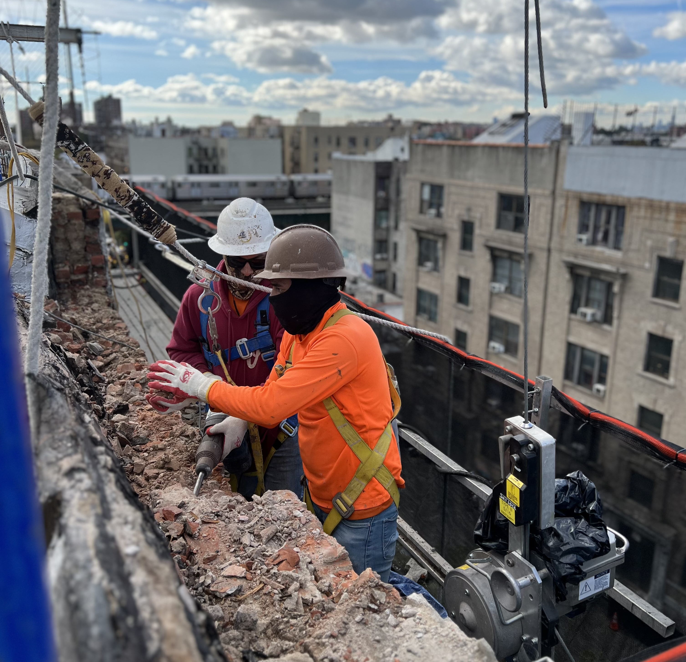
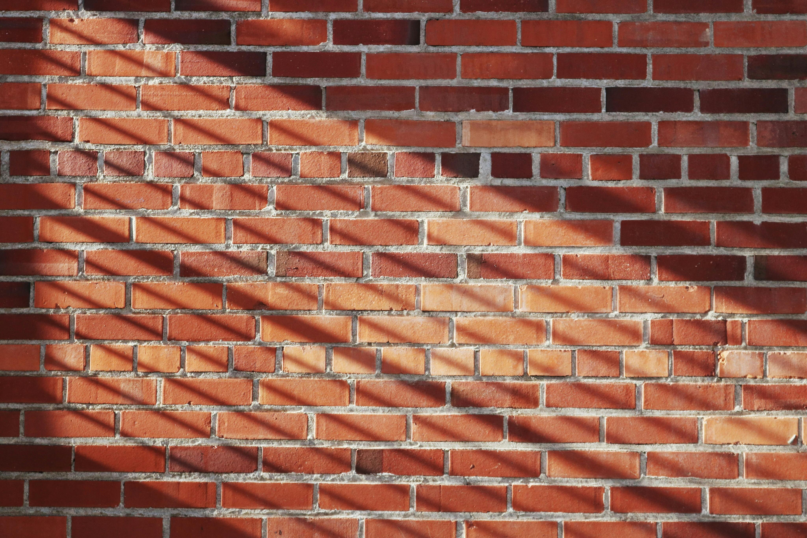

our masonry work is built to endure — combining structural strength with timeless style. Whether you’re looking to enhance the curb appeal of your home, repair existing stonework, or build something entirely new, we provide expert masonry solutions tailored to your needs. We use high-quality materials and time-tested techniques to ensure every project not only looks great but also stands strong for years to come.
Range of services!
- 🧱 Brickwork: We handle everything from new brick wall construction for homes and commercial buildings to custom brick veneers for aesthetic finishes. Our services also include repointing and tuckpointing to restore old or crumbling mortar, chimney repair and restoration, and the building or rebuilding of brick steps, porches, and entryways.
- 🪨 Stonework: Our stonework services include the installation of both natural and manufactured stone for facades, columns, and accent features. We also build beautiful flagstone patios, walkways, and garden borders. Whether you need a decorative stone feature or a functional retaining wall, we ensure your stonework is solid and visually appealing.
- 🧱 Block Work: We specialize in concrete masonry unit (CMU) block construction for everything from load-bearing walls to foundation structures. Our block work is ideal for basements, garages, utility buildings, and other structures requiring strength and durability.
- 🔧 Masonry Repair & Restoration: Our restoration services cover everything from mortar joint repair and brick or stone replacement to historic masonry preservation. We address cracks, deterioration, and weather damage while maintaining the original character and integrity of your structure.
Why Choose Sirgee for Masonry?
- ✔️ Experienced Craftsmanship: We bring years of hands-on experience and an eye for detail to every job.
- ✔️ Durable Materials: We work with trusted suppliers to source long-lasting, weather-resistant materials
- ✔️ Custom Work: Whether modern or traditional, we match the style and aesthetic of your home.
- ✔️ Clean Finish: We respect your property, keep job sites clean, and leave no mess behind.
- ✔️ Honest Estimates: Clear pricing, no hidden fees, and work that speaks for itself.
🧱 From Foundations to Finishes
Whether you need a brand-new brick wall, a patio made of flagstone, or restoration on a crumbling chimney — we’ve got the tools, skills, and passion to make it happen. Masonry is more than construction — it’s craftsmanship that adds value, beauty, and stability to your property. Let us help you build something strong and beautiful!
📞 Contact us today for a free masonry estimate.